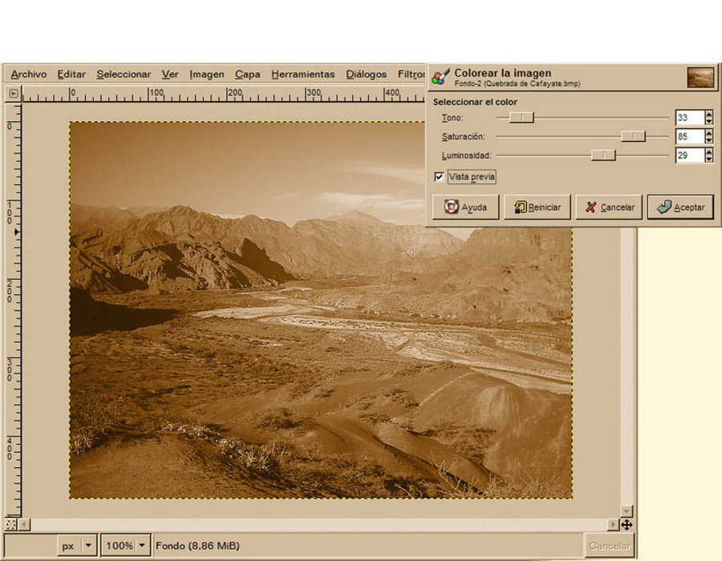
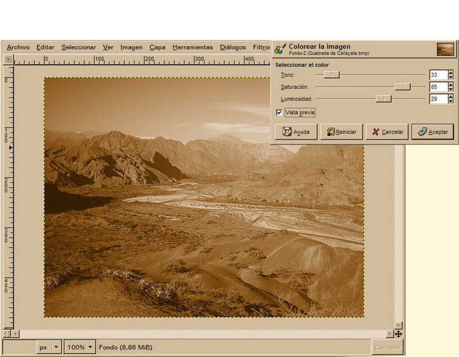
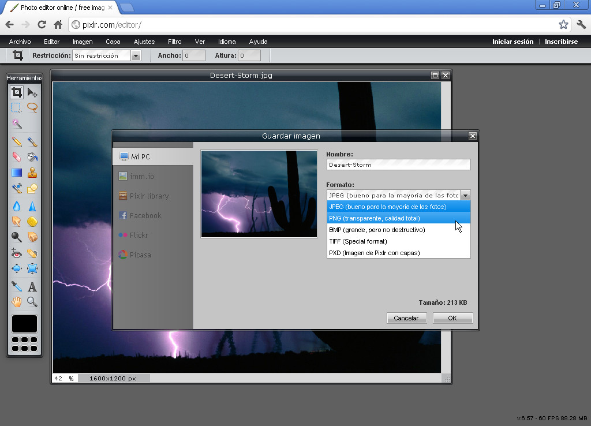
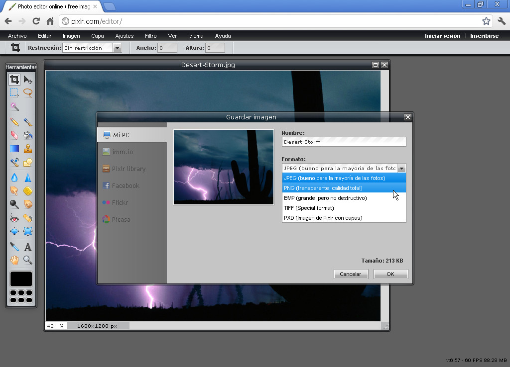

Universitat per a Majors
Imágenes
Tratamiento y gestión
Apreta la tecla → para avanzar.

Un píxel o pixel es la menor unidad homogénea en color que forma parte de una imagen digital, ya sea esta una fotografía, un fotograma de vídeo o un gráfico.
Un megapíxel o megapixel (Mpx) equivale a 1 millón de píxeles. Por ejemplo, una cámara que puede tomar fotografías con una resolución de 2000 × 1000 píxeles se dice que tiene 3 megapíxeles.

Una imagen digital no es más que una representación bidimensional de una imagen conformada por un conjunto de píxeles, cada uno de ellos con una información de color determinada.
Hoy haremos una presentación mezclada con la práctica. Vamos a buscar mediante el buscador de Google las siguientes imágenes y las descargaremos al escritorio. El tamaño de la foto ha de ser grande:

Cambia de foto con las teclas: ↑ y ↓
El retoque fotográfico es una técnica que permite obtener otra imagen modificada, ya sea para lograr una mejor calidad o más realismo, o para obtener una composición totalmente diferente que distorsione la realidad. Para llevar a cabo dicho proceso, se utilizan mayoritariamente programas informáticos.
Para retocar una imagen utilizamos programas de tratamiento fotográfico como Photoshop, Gimp o Paint.NET.
En esta sesión veremos el más sencillo de todos, que nos permite realizar operaciones básicas sin realizar niguna instalación (vía web) llamado Pixlr.
 

Cambia de foto con las teclas: ↑ y ↓
Programa de retoque fotográfico vía web.
Cambia de foto con las teclas: ↑ y ↓
Conéctate a la siguiente web. Lo primero que vamos a realizar es abrir alguna de las imágenes que nos hemos descargado previamente.

Cambia de foto con las teclas: ↑ y ↓
Vamos a realizar la operación de recorte con Pixlr. Consiste en recortar la foto a aquella porción de la imagen que más nos interese.
Recortando conseguimos eliminar aquella información que no nos interesa de la imagen, y reducimos su tamaño.
Cambia de foto con las teclas: ↑ y ↓

Una vez retocada la imagen, o si simplemente queremos guardarla en otro formato, o a otra calidad, podemos guardar la imagen.
El proceso de guardado es exactamente igual al que hemos realizado con otros programas como Word.
 

Cambia de foto con las teclas: ↑ y ↓